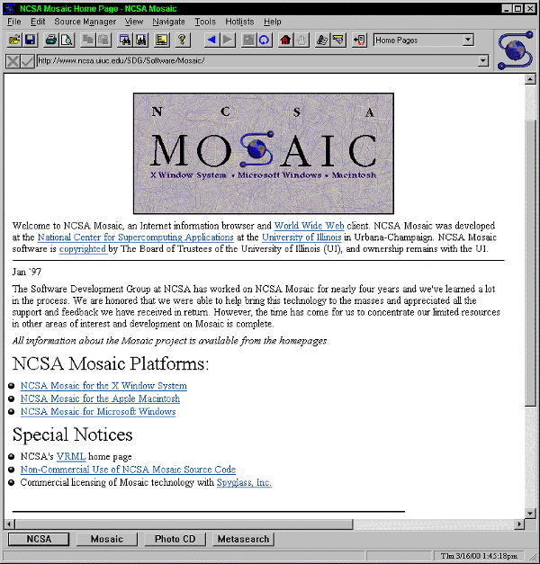
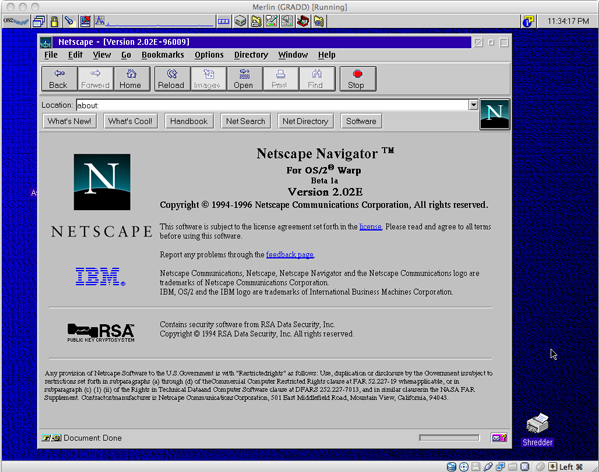

Le web 1.0 1992

NCSA Mosaic est un navigateur web développé à partir de fin 1992 au centre de recherches américain NCSA ( National Center for Supercomputing Applications), d'abord pour les plateformes X Window (X Mosaic), puis Macintosh (Mac Mosaic) et enfin Windows. C'est le navigateur qui a rendu le World Wide Web populaire.

Netscape Communications (anciennement Netscape Communications Corporation et Mosaic Communications Corporation à ses débuts, communément nommée Netscape) est une entreprise d'informatique américaine qui a été pionnière du World Wide Web avec son navigateur Web Netscape Navigator. Créée en 1994, l'entreprise a été rachetée par AOL en 1998 dont elle devint une filiale, jusqu'à sa fin en 2003.